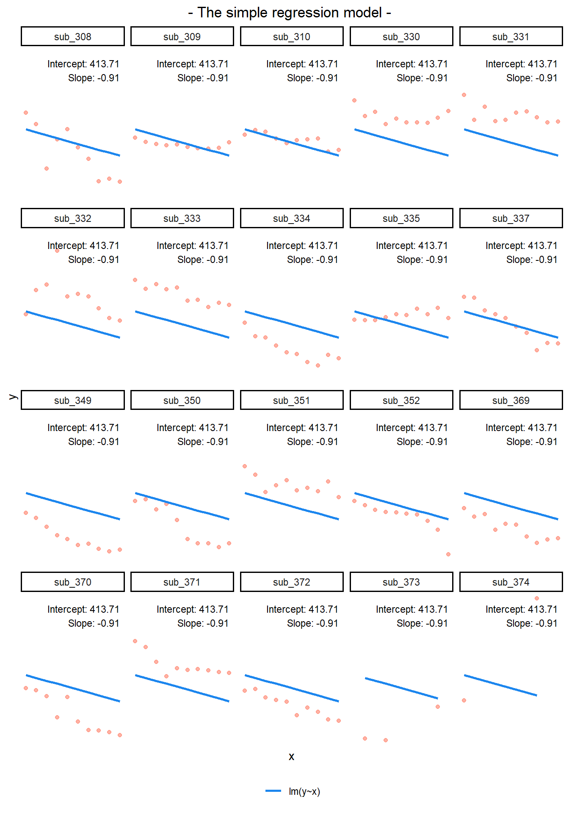
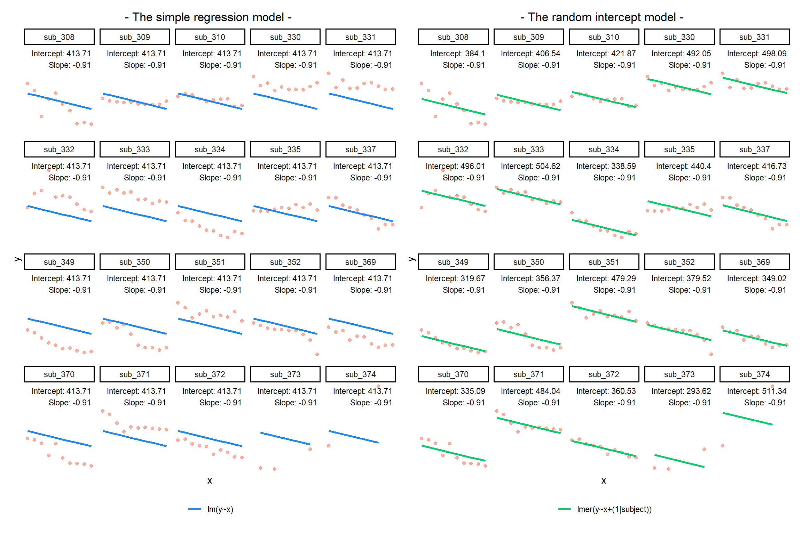
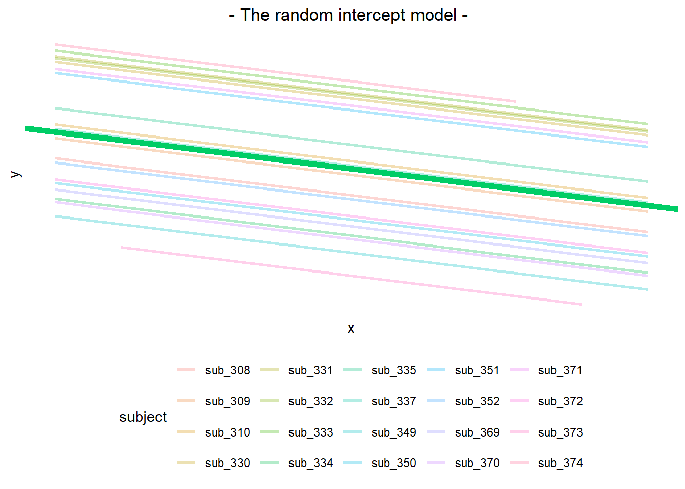
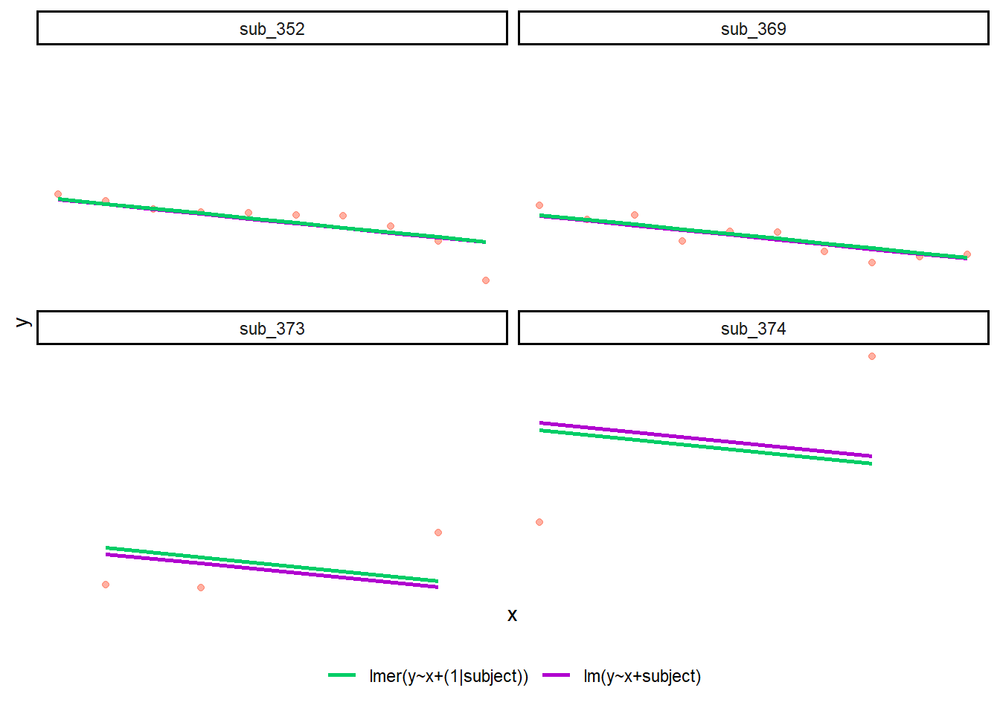
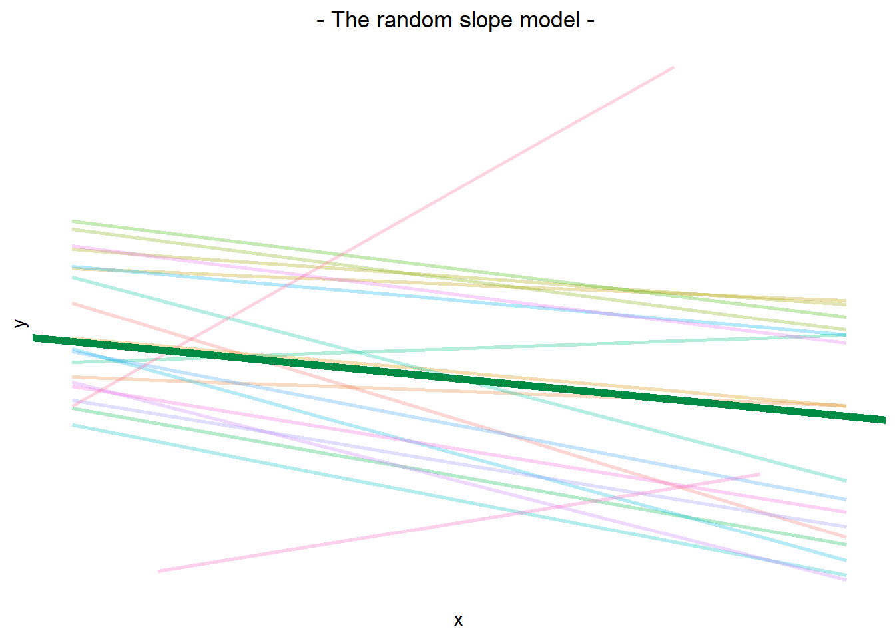
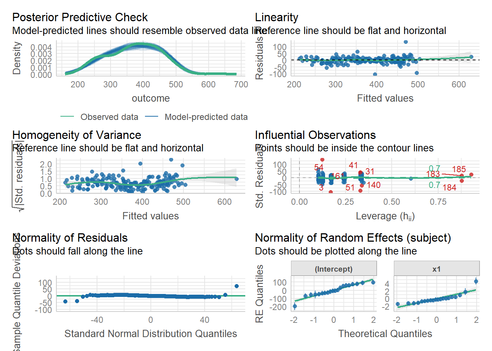
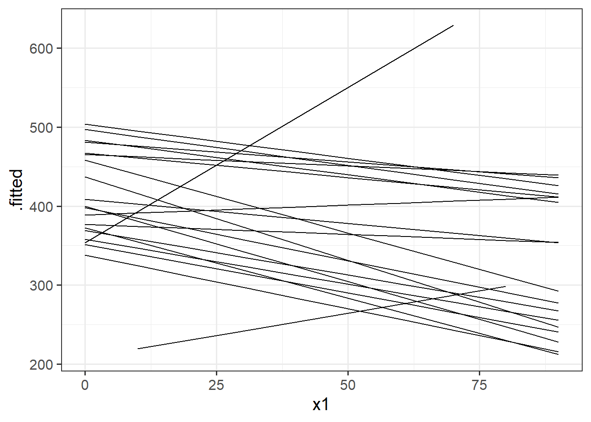

W5 Exercises: Bringing it all together
Take your pick!
Question 1
You can find all the datasets that we have seen (and more!) as an additional doc in the readings page.
For each one, there is a quick explanation of the study design which also details the research aims of the project.
Pick one of the datasets and, in your groups:
- explore the data, and do any required cleaning (most of them are clean already)
- conduct an analysis to address the research aims
- write a short description of the sample data (see Chapter 11 #the-sample-data)
- write a short explanation of your methods (see Chapter 11 #the-methods)
- write a short summary of your results, along with suitable visualisations and tables (see Chapter 11 #the-results)
- Post some of your writing on Piazza and we can collectively discuss it!
Each of the datasets contains some tags that give an indication of the type of study. Anything with either “#binomial-outcome” or “#non-linear” you can ignore as we have not covered this in DAPR3.
Flashcards: lm to lmer
In a simple linear regression, there is only considered to be one source of random variability: any variability left unexplained by a set of predictors (which are modelled as fixed estimates) is captured in the model residuals.
Multi-level (or ‘mixed-effects’) approaches involve modelling more than one source of random variability - as well as variance resulting from taking a random sample of observations, we can identify random variability across different groups of observations. For example, if we are studying a patient population in a hospital, we would expect there to be variability across the our sample of patients, but also across the doctors who treat them.
We can account for this variability by allowing the outcome to be lower/higher for each group (a random intercept) and by allowing the estimated effect of a predictor vary across groups (random slopes).
Before you expand each of the boxes below, think about how comfortable you feel with each concept.
This content is very cumulative, which means often going back to try to isolate the place which we need to focus efforts in learning.
Study tip: Choose a topic in one of the boxes below, but don’t expand the box yet. Instead, grab a pen and paper, and first spend two minutes writing down everything you can think of about that topic. After those two minutes, you can expand the box and see if you covered the key information. Write down anything you missed. Another day, try writing about the same topic again, and see if you can include anything you missed the first time.
Why does this work? Research on learning has shown that if you test yourself at recalling ideas (and especially if you repeatedly test yourself across several days or weeks), you’ll get better at remembering and understanding these ideas in the long term.
Simple Linear Regression
Formula:
- \(y_i = b_0 + b_1 x_i + \epsilon_i\)
R command:
lm(outcome ~ predictor, data = dataframe)
Note: this is the same as lm(outcome ~ 1 + predictor, data = dataframe). The 1 + (which represents the intercept, \(b_0\)) is always there, even if we don’t explicitly write it. (It’s possible to tell R to remove it, e.g., by explicitly writing 0 + predictor, but realistically you probably won’t ever want to fit a model with no intercept.)
Multi-level data
If our dataset contains multiple observations from the same subject, for example, or multiple observations of the same stimulus, then those data points are not independent. For example:
- Subject A may behave a particular consistent way, and Subject B may behave a different particular consistent way. So, one data point from Subject A will be closer to the other data points from Subject A than it will be to the data points from Subject B.
- Similarly, Stimulus A may provoke a particular reaction, while Stimulus B may provoke a different particular reaction. So a data point from Stimulus A will look more like the other data from Stimulus A than it will to the data from Stimulus B.
This is one way for data points to be non-independent. But a simple regression assumes independence. So, we need some extra way to take this non-independence into account. And we do that using random effects.
In other words: when our data is ‘clustered’ or ‘grouped’ such that datapoints are no longer independent, but belong to some grouping such as that of multiple observations from the same subject, we have multiple sources of random variability. A simple regression does not capture this.
To illustrate how a simple regression falls short: If we separate out our data to show an individual plot for each grouping (in this data the grouping is by subjects), we can see how the fitted regression line from lm() is assumed to be the same for each group.

Random intercepts
By including a random-intercept term, we are letting our model estimate some variability around the average intercept parameter. The variability reflects how the intercept should be adjusted (nudged up or down) to better suit the data from different members of each group.
Formula:
Level 1:
- \(y_{ij} = b_{0i} + b_{1} x_{ij} + \epsilon_{ij}\)
Level 2:
- \(b_{0i} = \gamma_{00} + \zeta_{0i}\)
Where the expected values of \(\zeta_{0}\), and \(\epsilon\) are 0, and their variances are \(\sigma_{0}^2\) and \(\sigma_\epsilon^2\) respectively. We will further assume that these are normally distributed.
(“Random intercepts” are called “random” because the adjustments to the intercept are modelled as random samples from an underlying normal distribution with mean 0 and standard deviation \(\sigma_0\).)
Remember, variance is just standard deviation squared!
We can now see that the intercept estimate \(b_{0i}\) for a particular group \(i\) is represented by the combination of a mean estimate for the parameter (\(\gamma_{00}\)) and a random effect (that is, an adjustment, a nudge) for that group (\(\zeta_{0i}\)).
R command:
lmer(outcome ~ predictor + (1 | grouping), data = dataframe)
Notice how the fitted line of the random intercept model has been adjusted for each subject.
Each subject’s line has been moved up or down. The intercepts can be different, but the slopes are all the same.

Another way of comparing the estimates of the random intercept model is to plot all the by-subject lines (the colourful lines) and overlay the fixed effect line (the thick green line):

Here, we see that the green fixed effect line is the average of all the by-subject lines, and that all the by-subject lines have the exact same slope as the fixed effect line—they’ve just been nudged up or down.
Pooling & Shrinkage
If you think about it, we might have done a similar thing to the random intercept with the tools we already had at our disposal, by using lm(y~x+subject). This would give us a coefficient for the difference between each subject and the reference level intercept, or we could extend this to lm(y~x*subject) to give us an adjustment to the slope for each subject.
However, the estimate of these models will be slightly different. The green lines are the predictions from the model with a random intercept by subject. The purple lines (sometimes hidden behind the green one) are the predictions from the model with a fixed effect of subject.

Why is the purple line for sub_373 below the green line? Why is the purple line for sub_374 above the green line? The short answer: “shrinkage”. The green lines (which come from the random intercept model) are “shrunk” closer to the average line than the purple lines (which come from the fixed effect model).
In general, when we use multilevel models, the estimates for each member of a group are shrunk toward the average. (How much they are shrunk by depends on how variable the members of a group are, as well as how many data points each member contributes.)
Shrinkage is a benefit of multilevel models for a couple reasons:
- Shrinkage makes our estimates a bit more conservative (it’s harder to get extreme estimates when they are shrunk toward the average).
- Shrinkage means that we can make a more educated guess about the estimates for members of a group, based on the estimates from everyone else in the group.
You could think of it like this: In the example above, the multilevel model “borrows information” or “borrows strength” from subjects sub_352, sub_369, and all the others, to inform its estimates for sub_373 and about sub_374. “Borrowing information” or “borrowing strength” also gets termed “partial pooling”, because we are partially combining (that is, partially pooling) all the information across members of a group to get an average, but still allowing those group members to vary a little.
| model | pooling | explanation |
|---|---|---|
| lm(y~x) | complete pooling | all information from all members of a group is combined (pooled) together, and a line is fit that doesn’t take grouping into account at all |
| lm(y~group + x) | no pooling | information is divided between the members of the group, and differnences between group members are estimated. Observations from group \(i\) contribute only to estimates about group \(i\) |
| lmer(y~x+(1 | group)) | partial pooling |
Random slopes
Formula:
Level 1:
- \(y_{ij} = b_{0i} + b_{1i} x_{ij} + \epsilon_{ij}\)
Level 2:
- \(b_{0i} = \gamma_{00} + \zeta_{0i}\)
- \(b_{1i} = \gamma_{10} + \zeta_{1i}\)
Where the expected values of \(\zeta_0\), \(\zeta_1\), and \(\epsilon\) are 0, and their variances are \(\sigma_{0}^2\), \(\sigma_{1}^2\), \(\sigma_\epsilon^2\) respectively. We will further assume that these are normally distributed.
(Like random intercepts, “random slopes” are called “random” because the adjustments to the slope are modelled as random samples from an underlying normal distribution with mean 0 and standard deviation \(\sigma_1\).)
Remember, variance is just standard deviation squared!
As with the intercept \(b_{0i}\), the slope of the predictor \(b_{1i}\) is now modelled by a mean \(\gamma_{10}\) and a random effect for each group (\(\zeta_{1i}\)).
R command:
lmer(outcome ~ predictor + (1 + predictor | grouping), data = dataframe)
Note: this is the same as lmer(outcome ~ predictor + (predictor | grouping), data = dataframe) . Like in the fixed-effects part, the 1 + is assumed in the random-effects part.
Model parameters: Fixed effects
Fixed effects are the parameters estimated for the average group, around which the random effects can vary.
The plot below show the fitted values for each subject from the random slopes model lmer(outcome ~ predictor + (1 + predictor | grouping), data = dataframe)

The thick green line shows the fixed intercept and slope around which the members of the group all vary randomly.
The fixed effects are the parameters that define the thick green line, and we can extract them using the fixef() function:
fixef(random_slopes_model)(Intercept) x1
405.790 -0.672
Model parameters: Variance components
Variance components are the variances and covariances of the random effects. A multilevel model estimates variance components as well as fixed effects.
The reason we call random effects “random” is because the adjustments to the fixed effects are modelled as random samples from an underlying normal distribution. The width of these distributions represents how much the group tends to deviate from each fixed effect. We can think of the width of these distributions as the variance components.
We can extract these using the VarCorr() function, and we can also see them in the “random effects” part of the summary() output from a model.
Looking at these variance components, we can ask:
- How much do members of a group vary around the fixed intercept? And around the fixed slope? (This is answered by the standard deviation.)
- Do members of a group with higher intercepts also have higher slopes? (This is the correlation between random intercept and random slope.)
VarCorr(random_slopes_model) Groups Name Std.Dev. Corr
subject (Intercept) 72.72
x1 1.36 -0.35
Residual 25.74 Remember, variance is just standard deviation squared!
Extracting group-member-specific random effects
We can extract each group member’s deviations from the group average (i.e., from the fixed effect) using the ranef() function.
ranef(random_slopes_model)$subject
(Intercept) x1
sub_308 31.33 -1.4400
sub_309 -28.83 0.4184
sub_310 2.71 0.0599
sub_330 59.40 0.3853
sub_331 74.96 0.1739
sub_332 91.09 -0.2346
sub_333 97.85 -0.1906
sub_334 -54.19 -0.5585
sub_335 -16.90 0.9207
sub_337 52.22 -1.1660
sub_349 -67.76 -0.6844
sub_350 -5.82 -1.2379
sub_351 61.20 0.0550
sub_352 -7.91 -0.6650
sub_369 -47.64 -0.4681
sub_370 -33.12 -1.1100
sub_371 77.58 -0.2040
sub_372 -36.39 -0.4583
sub_373 -197.58 1.7990
sub_374 -52.20 4.6051
with conditional variances for "subject" What do these numbers mean?
These are the differences between the line that fits each subject’s data and the line defined by the fixed intercept and the fixed slope. So the first entry, the line that fits the data from sub_308 has an intercept that’s 31.33 higher than the fixed intercept and a slope that is 1.44 below the fixed slope.
If we wanted to find the parameters of each subject’s line, we could compute them with this information and the model’s fixed effects. But the next drop-down box shows us how to find those parameters more simply.
Extracting group-member-specific coefficients
We can see the estimated intercept and slope for each subject specifically, using the coef() function.
coef(random_slopes_model)$subject
(Intercept) x1
sub_308 437 -2.112
sub_309 377 -0.254
sub_310 409 -0.612
sub_330 465 -0.287
sub_331 481 -0.498
sub_332 497 -0.907
sub_333 504 -0.863
sub_334 352 -1.231
sub_335 389 0.248
sub_337 458 -1.838
sub_349 338 -1.357
sub_350 400 -1.910
sub_351 467 -0.617
sub_352 398 -1.337
sub_369 358 -1.140
sub_370 373 -1.782
sub_371 483 -0.876
sub_372 369 -1.131
sub_373 208 1.127
sub_374 354 3.933
attr(,"class")
[1] "coef.mer"Let’s confirm that the outcome of coef() is the same as taking the fixed effects and then adding each subject’s random effects (as seen in the previous drop-down box).
cbind(
int = fixef(random_slopes_model)[1] +
ranef(random_slopes_model)$subject[,1],
slope = fixef(random_slopes_model)[2] +
ranef(random_slopes_model)$subject[,2]
) int slope
[1,] 437 -2.112
[2,] 377 -0.254
[3,] 409 -0.612
[4,] 465 -0.287
[5,] 481 -0.498
[6,] 497 -0.907
[7,] 504 -0.863
[8,] 352 -1.231
[9,] 389 0.248
[10,] 458 -1.838
[11,] 338 -1.357
[12,] 400 -1.910
[13,] 467 -0.617
[14,] 398 -1.337
[15,] 358 -1.140
[16,] 373 -1.782
[17,] 483 -0.876
[18,] 369 -1.131
[19,] 208 1.127
[20,] 354 3.933Yes, both of these outcomes are the same.
Plotting random effects
The quick and easy way to plot your random effects is to use the dotplot.ranef.mer() function in lme4.
randoms <- ranef(random_slopes_model, condVar=TRUE)
dotplot.ranef.mer(randoms)$subject
Assumptions, Influence
For a simple linear model, \(\color{red}{y} = \color{blue}{b_0 + b_1(x)} \color{black}{+ \varepsilon}\), we distinguish between the systematic model part (\(b_0 + b_1(x)\)) and the errors, which randomly vary around the systematic model (\(\varepsilon\)). In words, we can summarise the linear model expression as \(\color{red}{\text{outcome}} = \color{blue}{\text{model}}\) \(+ \text{error}\).
In the multi-level model, another source of error (i.e., of variation) come from our random effects: \(\color{red}{\text{outcome}}\) = \(\color{blue}{\text{model}}\) \(+ \text{group-error} + \text{individual-error}\). As such, random effects are another form of residual. Our assumptions of “zero mean, constant variance” apply at both levels of residuals (see Figure 1).
- We can assess these normality of both
resid(model)andranef(model)by constructing plots using functions such ashist(),qqnorm()andqqline().
- We can also use
plot(model, type=c("p","smooth"))to give us our residuals vs fitted plot (smooth line should be horizontal at approx zero, showing zero mean).
plot(model, form = sqrt(abs(resid(.))) ~ fitted(.), type = c("p","smooth"))will give us our scale-location plot (smooth line should be horizontal, showing constant variance).
We can also use the check_model() function from the performance package to get lots of info at once:
library(performance)
check_model(random_slopes_model)
Inference
To get p-values for our coefficients, there are lots of different ways (see Optional Chapter 3 if you’re interested).
For DAPR3, we are recommending using the “Satterthwaite” method, which can be done by re-fitting the model using the lmerTest package:
random_slopes_model2 <- lmerTest::lmer( outcome ~ 1 + x1 + (1+x1|subject), data=dat)
summary(random_slopes_model2)Linear mixed model fit by REML. t-tests use Satterthwaite's method [
lmerModLmerTest]
Formula: outcome ~ 1 + x1 + (1 + x1 | subject)
Data: dat
REML criterion at convergence: 1862
Scaled residuals:
Min 1Q Median 3Q Max
-4.069 -0.417 -0.014 0.431 5.226
Random effects:
Groups Name Variance Std.Dev. Corr
subject (Intercept) 5287.68 72.72
x1 1.86 1.36 -0.35
Residual 662.33 25.74
Number of obs: 185, groups: subject, 20
Fixed effects:
Estimate Std. Error df t value Pr(>|t|)
(Intercept) 405.790 16.666 18.045 24.35 3e-15 ***
x1 -0.672 0.313 16.757 -2.15 0.047 *
---
Signif. codes: 0 '***' 0.001 '**' 0.01 '*' 0.05 '.' 0.1 ' ' 1
Correlation of Fixed Effects:
(Intr)
x1 -0.370If we want to test multiple coefficients at once, then we can conduct model comparisons by doing a likelihood ratio test. We start with a full model, and then create a more restricted comparison model by removing the bits that we want to test.
In the example below, the full model is outcome ~ 1 + x1 + x2 + (1 + x1 | subject). If we wanted to test whether the predictors x1 and x2 contribute significantly to the model, then we would create a restricted model for comparison by removing those terms. That gives us outcome ~ 1 + (1 + x1 | subject).
You’ll notice that x1 still appears in the random effect: we’re still getting a random slope over x1 by subject, even though x1 is no longer in the fixed effects. This looks a little weird, but when doing model comparison, it’s OK to have random slopes of predictors that aren’t in the fixed effects.
model2 <- lmer( outcome ~ 1 + x1 + x2+ (1+x1|subject), data=dat)
model2.0 <- lmer( outcome ~ 1 + (1+x1|subject), data=dat)
anova(model2.0, model2)
Visualising group-member-specific fitted values
The model fitted (or “model predicted”) values can be obtained a couple ways.
predict()returns just the predicted values, which is a little inconvenient because you’d have to map them back to the original data that you gave to the model.broom.mixed::augment()returns the predicted values as well as the data that you gave to the model.
We would typically like to plot the fitted values for each member of the grouping variable (e.g., for each subject):
library(broom.mixed)
augment(random_slopes_model) |>
ggplot(aes(x=x1, y=.fitted, group=subject))+
geom_line()
Visualising fixed effects along with the group-member-specific fitted values
If we want to plot the fixed effects from our model, we have to do something else. A good option is to use the effects package to construct a dataframe of the linear prediction across the values of a predictor, plus confidence intervals. We can then pass this to ggplot(), giving us all the control over the aesthetics.
# when you want more control
library(effects)
ef <- as.data.frame(effect(term="x1",mod=random_slopes_model))
ggplot(ef, aes(x=x1,y=fit, ymin=lower,ymax=upper))+
geom_line()+
geom_ribbon(alpha=.3)We might then want to combine this with our plot of fitted values to make a plot that shows both the estimates for the average group (this is the fixed effects part) and the amount to which groups vary around that average (this we can see with the fitted values plot)
# when you want more control
library(effects)
ef <- as.data.frame(effect(term="x1",mod=random_slopes_model))
augment(random_slopes_model) |>
ggplot(aes(x=x1))+
geom_line(aes(y=.fitted,group=subject), alpha=.1) +
geom_line(data = ef, aes(y=fit))+
geom_ribbon(data = ef, aes(y=fit,ymin=lower,ymax=upper),
col="red", fill="red",alpha=.3)
Nested variables
In the following schematic, we have observations from several children, who are each from a particular school.
Every school contains multiple children, and each child appears only in a single school. So, the child variable is “nested” within the school variable.
In R, we specify random effects for nested variables using the syntax
(1 | school) + (1 | child:school)
or
(1 | school) + (1 | school:child)
The specific order of the variables around the colon symbol doesn’t matter. (But if you think about nesting like “child within school”, then maybe the child:school order is more intuitive.)
Crossed variables
In the following schematic, we have observations from several participants who have each taken part in several tasks.
Because we have data from every participant for every task, we describe the participant and task variables as “fully crossed”.
In contrast: the following schematic shows observations from several participants, who have each only done a subset of the tasks.
We have some data from every participant, and we have some data from every task, but it’s not the case that every participant took part in every task. In this case, we describe the participant and task variables as “partially crossed” or “not fully crossed”.
In R, we specify random effects for both fully crossed and partially crossed variables as follows:
(1 | ppt) + (1 | task)